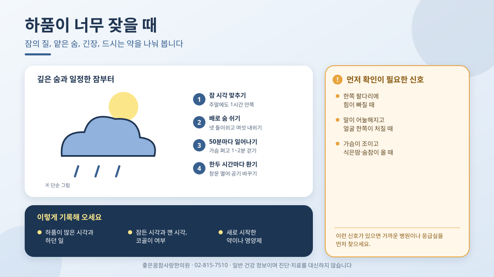

이종호 한의사 감수좋은꿈참사랑한의원 대표원장 (한의사 면허번호 19769)발행 2026-11-26 · 수정 2026-11-27
이 글의 차례
회의실에서 상사가 말을 이어 가는데, 또 하품이 올라와요. 손으로 입을 가리고 눈물을 훔치며, 졸린 거 아니라고 속으로 변명해 봅니다. 밤에 잠도 잘 잤는데 왜 이렇게 하품이 나는지 스스로도 이상하죠. 진료실에서 이 얘기를 꺼내시는 분들은 대개 조금 멋쩍은 표정을 지으세요.
멋쩍어하실 것 없어요. 하품은 누구나 하루에 몇 번씩 해요. 아침에 일어날 때, 잠들기 전, 지루한 얘기를 들을 때 나오는 하품은 몸이 깨어 있는 정도를 스스로 맞추는 자연스러운 행동이거든요. 원래 그런 거예요.
그런데 '졸려서 나오는 하품'과 '졸리지도 않은데 몇 분마다 이어지는 하품'은 두 개가 다른 얘기예요. 뒤쪽이 하루 종일, 여러 날 이어진다면 그 이유를 한번 살펴볼 만해요.
하품이 잦은 것 자체로 큰 병을 뜻하는 경우는 많지 않아요. 다만 잠의 질, 숨 쉬는 모양, 마음의 긴장, 드시는 약처럼 여러 가지가 얽혀 있을 수 있어서, 하나씩 풀어 보면 생각보다 손쉬운 실마리가 보이기도 하거든요. 그러니 걱정부터 하지 마시고, 하품이 나는 때를 가만히 떠올려 보시는 것부터 시작하시면 돼요.
이 글에서는 하품이 왜 잦아지는지, 어떤 경우에 다른 원인을 먼저 확인해야 하는지, 생활에서 무엇을 바꿔 볼 수 있는지를 차례로 말씀드릴게요.
하품은 몸에서 어떤 일을 하나요
하품을 하면 입이 크게 벌어지고 숨을 깊게 들이마시며, 턱과 목, 얼굴 근육이 한꺼번에 늘어났다가 풀립니다. 이 과정에서 머리 쪽으로 가는 피의 흐름이 잠시 달라지고, 뇌의 온도를 식혀 정신을 맑게 하는 데 도움이 된다는 설명이 많이 알려져 있습니다.
그래서 하품은 졸릴 때만이 아니라 깨어나려고 애쓸 때도 나옵니다. 아침에 일어나서 하는 하품, 지루한 회의를 버티며 나오는 하품, 시험장에 들어가기 직전 긴장 속에서 나오는 하품은 모두 몸이 각성 상태를 바꾸려는 신호에 가깝습니다.
다른 사람이 하품하는 모습을 보거나 하품 이야기를 듣기만 해도 따라 하품이 나오는 것도 잘 알려진 현상입니다. 이 글을 읽으시면서 하품이 나오셨다면 지극히 자연스러운 반응입니다.
왜 졸리지 않은데도 하품이 잦아질까요
가장 흔한 이유는 겉으로는 잘 잤다고 느끼지만 실제 잠의 질이 얕은 경우입니다. 잠드는 시각이 날마다 다르거나, 자다가 자주 깨거나, 코골이로 숨이 고르지 않으면 본인은 몰라도 낮 동안 몸이 각성을 유지하려고 애쓰면서 하품이 늘어납니다.
두 번째는 숨이 얕아진 경우입니다. 오래 앉아 구부정한 자세로 화면을 보거나 긴장한 상태가 이어지면 가슴 위쪽으로만 얕게 숨을 쉬게 됩니다. 그러면 몸이 깊은 숨을 한 번 쉬려고 하품이나 한숨을 자주 끼워 넣습니다.
세 번째는 마음의 긴장과 불안입니다. 걱정이 많은 시기에는 하품과 한숨이 함께 잦아지는 분이 많습니다. 긴장한 몸이 스스로를 풀어 보려는 움직임으로 볼 수 있습니다. 시험이나 발표를 앞두고 하품이 나는 것도 같은 이유입니다. 이런 분들은 하품이 나는 순간을 떠올려 보면 대개 마음이 쫓기던 때와 겹칩니다.
그래서 진료실에서는 하품과 함께 요즘 마음을 무겁게 하는 일이 있는지도 조심스럽게 여쭙니다.
네 번째는 드시는 약입니다. 일부 우울증 약, 불안을 줄이는 약, 알레르기 약, 진통제 가운데는 졸음이나 하품을 늘릴 수 있는 것이 있습니다. 약을 시작하고 나서 하품이 늘었다면 처방한 선생님께 말씀하시는 것이 먼저입니다. 혼자 약을 멈추지는 마세요.
한의학에서는 하품이 잦은 모습을 기운이 지쳐 있거나 가슴에 답답한 기운이 뭉친 상태와 연결해 보기도 합니다. 늘 피곤하고 목소리에 힘이 없는 분, 반대로 속이 답답하고 한숨이 잦은 분은 같은 하품이라도 살피는 방향이 조금 다릅니다.
하품과 헷갈리기 쉬운 증상
하품과 비슷해 보이지만 조금 다른 것이 한숨입니다. 한숨은 숨을 길게 내쉬는 쪽에 가깝고, 가슴이 답답하거나 걱정이 많을 때 자주 나옵니다. 하품과 한숨이 함께 잦다면 숨 쉬는 모양과 마음의 긴장을 함께 살펴봅니다.
숨이 모자란 듯 깊게 들이쉬고 싶은데 잘 안 쉬어지는 느낌이라면, 하품보다는 숨이 차는 증상으로 보아야 할 때가 있습니다. 계단을 오를 때 숨이 차고 발이 붓거나 가슴이 두근거린다면 내과에서 심장과 폐를 먼저 확인하시는 것이 좋습니다.
낮에 하품과 함께 졸음이 쏟아져 일을 하기 어렵다면 하품 자체보다 잠의 문제를 먼저 보아야 합니다. 코골이가 심하고 자다가 숨이 멎는 것 같다는 말을 들으셨다면 수면 검사를 받아 보시는 것이 도움이 됩니다.
하품이 잦아지기 쉬운 생활
다음 가운데 해당하는 것이 있는지 살펴보세요. 여러 개가 겹칠수록 하품이 늘어나는 경향이 있습니다.
- 잠드는 시각이 날마다 1시간 이상 들쭉날쭉한 경우
- 잠들기 직전까지 휴대폰이나 태블릿을 보는 경우
- 하루 대부분을 앉아서 화면을 보며 보내는 경우
- 환기가 잘 안 되는 좁은 사무실이나 공부방에서 오래 지내는 경우
- 걱정거리가 많아 한숨이 잦아진 시기
- 커피를 하루 여러 잔 마셔 밤잠이 얕아진 경우
이 가운데 환기는 생각보다 중요합니다. 겨울철 창문을 닫은 채 여러 사람이 한 공간에 오래 있으면 공기가 탁해지고 머리가 무거워지면서 하품이 늘어납니다. 한두 시간에 한 번 창문을 열어 공기를 바꿔 보세요.
하품이 잦으면 다른 사람에게 실례가 될까 걱정돼요
진료실에서 의외로 많이 듣는 고민이 이것입니다. 회의나 수업, 상담처럼 사람을 마주하는 자리에서 하품이 자꾸 나오면 상대가 지루해한다고 오해할까 봐 신경이 쓰인다는 것이죠. 그 긴장이 다시 하품을 부르는 고리가 생기기도 합니다.
하품이 올라올 때 억지로 참으면 턱과 목에 힘이 들어가 오히려 더 답답해집니다. 그럴 때는 코로 천천히 깊게 숨을 들이마시고 입으로 길게 내쉬어 보세요. 몸이 원하던 깊은 숨을 한 번 채워 주면 하품이 잦아드는 분이 많습니다.
하품을 할 때 턱이 크게 벌어지면서 딸깍 소리가 나거나 턱이 잘 안 다물어지는 분이라면, 하품 자체보다 턱관절도 함께 살펴보시는 것이 좋습니다. 입을 너무 크게 벌리지 않도록 혀끝을 입천장에 대고 하품하는 습관이 도움이 될 수 있습니다.
계절과 하루 시간에 따라 달라지는 하품
겨울에는 해가 짧아지고 바깥 활동이 줄어들면서 낮에도 몸이 덜 깨어 있는 느낌을 받는 분이 많습니다. 난방으로 실내 공기가 건조하고 탁해지는 것도 한몫합니다. 겨울철 하품이 늘었다면 오전에 햇볕을 쬐며 10분쯤 걷는 것부터 시작해 보세요.
하루 가운데에서는 이른 오후와 저녁 무렵 하품이 많아지는 분이 흔합니다. 점심 식사 뒤 각성이 떨어지는 시간, 하루의 피로가 몰리는 퇴근 무렵이 그렇습니다. 하품이 몰리는 시간대를 알면 그 앞에 잠깐 일어나 몸을 펴는 시간을 미리 끼워 넣을 수 있습니다.
학생과 어르신의 하품은 조금 다르게 봅니다
학생들은 늦은 밤까지 공부하거나 휴대폰을 보다 잠이 줄어든 채 아침 수업을 듣는 경우가 많습니다. 수업 시간 하품이 잦다는 이야기를 들으면 저는 먼저 잠드는 시각과 아침 식사 여부를 여쭙니다. 하품을 꾸중하기보다 잠의 양과 리듬을 함께 챙겨 주시는 것이 좋습니다.
어르신은 밤잠이 얕아지고 낮 활동이 줄면서 하품이 늘어나기 쉽습니다. 다만 드시는 약이 여러 가지라면 약의 영향도 함께 살펴야 합니다. 평소와 달리 하품과 졸음이 갑자기 늘었다면 다니시는 내과나 신경과에 먼저 말씀하시고, 한의원에서는 잠과 소화, 기력을 함께 살펴봅니다.
먼저 이렇게 여쭙니다
처음 오시면 저는 대략 이런 순서로 여쭙니다. 미리 떠올려 오시면 이야기가 수월해집니다.
- 하품은 하루에 대략 몇 번, 어떤 상황에서 많이 나오나요?
- 하품이 늘어난 것은 언제부터인가요? 그 무렵 달라진 일이 있나요?
- 밤에 몇 시에 잠들고 몇 시에 깨시나요? 코골이가 있나요?
- 최근 새로 드시기 시작한 약이나 영양제가 있나요?
- 한숨이 잦거나 가슴이 답답한 느낌이 함께 있나요?
- 낮에 졸음이 쏟아져 일하기 어려운 때가 있나요?
모든 질문에 정확히 답하지 못하셔도 괜찮습니다. 하품이 언제 많은지 하나만 떠올려 오셔도 잠 쪽인지, 숨과 긴장 쪽인지 가늠하는 데 큰 도움이 됩니다.
일상에서 먼저 해 볼 수 있는 것
하품을 줄이는 방법은 대부분 잠과 숨, 몸의 움직임을 조금씩 바꾸는 데서 시작합니다. 이번 주에 하나만 골라 보세요.
- 잠드는 시각과 일어나는 시각을 주말에도 1시간 안쪽으로 맞추기
- 잠들기 30분 전에는 휴대폰을 침대 밖에 두기
- 50분 앉아 있었다면 일어나 1~2분 가슴을 펴고 걷기
- 하루 두세 번 배로 천천히 숨 쉬기 다섯 번
- 사무실이나 공부방 창문을 한두 시간마다 열어 환기하기
- 커피는 오후 2시 이후로는 마시지 않기
배로 숨 쉬기는 이렇게 해 보세요. 한 손은 가슴에, 한 손은 배에 올리고 코로 넷을 세며 들이마셔 배가 부풀게 합니다. 그리고 입으로 여섯을 세며 천천히 내쉽니다. 가슴 위 손은 거의 움직이지 않고 배 위 손만 오르내리면 잘하고 계신 겁니다.
목과 어깨를 풀어 주는 것도 도움이 됩니다. 어깨를 귀 쪽으로 끌어올렸다가 힘을 툭 빼고 내리는 동작을 다섯 번, 고개를 천천히 좌우로 기울여 목 옆을 늘이는 동작을 몇 번 해 보세요. 굳은 목과 어깨가 풀리면 숨도 한결 깊어집니다.
한의원에서 함께 살필 수 있는 경우
- 잘 잤다고 느끼는데도 낮에 하품이 잦고 개운하지 않은 경우
- 하품과 한숨이 함께 잦고 가슴이 답답한 경우
- 늘 피곤하고 목소리에 힘이 없으며 하품이 잦은 경우
- 목과 어깨가 굳어 숨이 얕게 느껴지는 경우
- 긴장하거나 걱정이 많을 때 하품이 늘어나는 경우
좋은꿈참사랑한의원에 오시면 먼저 아래 '먼저 확인이 필요한' 신호가 없는지부터 봅니다. 그다음 맥을 짚고 잠과 소화, 대소변, 손발의 온도, 마음의 긴장을 함께 여쭙습니다.
진찰한 내용을 바탕으로 잠과 숨 쉬는 습관에서 바꿔 볼 것 하나와 함께 침, 온열 관리, 한약 상담 가운데 지금 상태에 맞는 것을 정합니다. 한약을 상의할 때는 드시는 약을 모두 확인하고 신중하게 정합니다. 다른 병원에서 처방받은 약은 처방한 선생님과 상의 없이 멈추지 않습니다.
이렇게 기록해 오시면 상담이 쉬워집니다
일주일 정도만 간단히 적어 보세요. 하품이 많은 때와 적은 때의 차이가 보이기 시작합니다.
- 하품이 많았던 시각과 그때 하고 있던 일
- 전날 잠든 시각과 깬 시각, 밤에 깬 횟수
- 커피나 차를 마신 시각과 양
- 새로 시작한 약이나 영양제
- 걱정이 많았던 날이나 긴장했던 날 표시
기록을 나란히 놓고 보면 하품이 잠이 짧았던 다음 날 몰리는지, 회의나 발표가 있는 날 몰리는지가 드러납니다. 그 흐름이 보이면 무엇부터 바꿀지가 분명해집니다.
함께 사는 가족에게 코골이나 자다가 숨을 멈추는 모습이 있는지 물어봐 주시면 더 좋습니다. 본인은 알기 어려운 밤사이의 모습이 낮의 하품을 설명해 주는 경우가 꽤 있습니다. 휴대폰 녹음 앱으로 잠든 뒤 소리를 하룻밤 녹음해 오셔도 됩니다.
하품을 너무 미워하지 않으셔도 됩니다
하품은 몸이 스스로를 깨우고 식히려는 작은 노력이에요. 잦아졌다는 건 몸이 조금 더 쉬고 싶거나, 깊은 숨이 필요하거나, 긴장이 쌓였다는 신호일 수 있어요. 억지로 참기보다 그 신호가 무엇을 말하는지 들어 보시면 좋겠어요.
저는 하품을 몸이 창문을 잠깐 여는 일에 빗대곤 해요. 방 안 공기가 답답하면 창문을 열고 싶어지잖아요. 창문을 못 열게 막기보다, 방이 왜 답답해졌는지를 먼저 보는 게 순서인 거예요.
몸을 살피는 건 제가 맡을게요. 대신 하나만 부탁드려요. 이번 주엔 잠드는 시각을 매일 비슷하게 맞춰 보세요. 딴 건 하시던 대로 편하게 하셔도 돼요. 이것저것 한꺼번에 하려고 하면 그게 또 하나의 긴장이 되거든요.
잠을 조금 더 일정하게 챙기면서 하품도 서서히 제자리를 찾아가는 분들이 있어요. 서두르지 않고 지켜보는 마음이면 충분해요. 하루 어긋났다고 탓하실 것 없어요. 다음 날 다시 맞추면 되는 거예요.
다음에 오시면 일주일 기록을 함께 보며 하품이 어떻게 지나갔는지 얘기 나눠요. 궁금한 건 그냥 편하게 물어보세요.
이런 증상은 먼저 확인이 필요합니다
- 하품과 함께 갑자기 한쪽 팔다리에 힘이 빠지거나 말이 어눌해지고 얼굴 한쪽이 처지는 경우
- 하품이 잦으면서 가슴이 조이듯 아프거나 식은땀이 나고 숨이 심하게 차는 경우
이런 신호가 있으면 한의원보다 가까운 병원이나 응급실을 먼저 찾으세요.
함께 읽으면 좋은 글
- 가슴이 꽉 막힌 듯 답답하고 한숨이 자꾸 나오는 흉민은 어떻게 살피나요?
- 밤에 충분히 자도 낮에 졸음이 쏟아지는 과다수면·기면증 의심은 어떻게 살피나요?
- 충분히 쉬어도 몸이 늘 피곤한 만성피로는 어떤 점을 살펴보나요?
- 하품하거나 크게 웃다 턱이 빠지는 습관성 턱관절 탈구는 왜 되풀이되고, 어떻게 살피나요?
- 불안한 마음과 몸이 긴장한 느낌은 어떻게 나눠서 이야기하나요?

여쭙는 것
- 하품은 하루에 대략 몇 번, 어떤 상황에서 많이 나오나요?
- 하품이 늘어난 것은 언제부터인가요? 그 무렵 달라진 일이 있나요?
- 밤에 몇 시에 잠들고 몇 시에 깨시나요? 코골이가 있나요?
생활에서 해 볼 것
- 잠드는 시각과 일어나는 시각을 주말에도 1시간 안쪽으로 맞추기
- 잠들기 30분 전에는 휴대폰을 침대 밖에 두기
- 50분 앉아 있었다면 일어나 1~2분 가슴을 펴고 걷기
한의원에서 함께 살필 것
- 잘 잤다고 느끼는데도 낮에 하품이 잦고 개운하지 않은 경우
- 하품과 한숨이 함께 잦고 가슴이 답답한 경우
- 늘 피곤하고 목소리에 힘이 없으며 하품이 잦은 경우
먼저 확인이 필요한 신호
- 하품과 함께 갑자기 한쪽 팔다리에 힘이 빠지거나 말이 어눌해지고 얼굴 한쪽이 처지는…
- 하품이 잦으면서 가슴이 조이듯 아프거나 식은땀이 나고 숨이 심하게 차는 경우
한눈에 보는 표
| 구분 | 핵심 |
|---|---|
| 여쭙는 것 | 하품은 하루에 대략 몇 번, 어떤 상황에서 많이 나오나요? 하품이 늘어난 것은 언제부터인가요? 그 무렵 달라진 일이 있나요? |
| 생활에서 해 볼 것 | 잠드는 시각과 일어나는 시각을 주말에도 1시간 안쪽으로 맞추기 잠들기 30분 전에는 휴대폰을 침대 밖에 두기 |
| 한의원에서 함께 살필 것 | 잘 잤다고 느끼는데도 낮에 하품이 잦고 개운하지 않은 경우 하품과 한숨이 함께 잦고 가슴이 답답한 경우 |
| 먼저 확인이 필요한 신호 | 하품과 함께 갑자기 한쪽 팔다리에 힘이 빠지거나 말이 어눌해지고 얼굴 한쪽이 처지는 경우 하품이 잦으면서 가슴이 조이듯 아프거나 식은땀이 나고 숨이 심하게 차는 경우 |
자주 묻는 질문
하품을 자주 하면 산소가 부족한 건가요?
흔히 그렇게 알려져 있지만, 하품이 잦은 이유는 대개 잠의 질이나 얕은 호흡, 긴장 같은 생활 쪽에 있는 경우가 많습니다. 숨이 심하게 차거나 가슴이 아프다면 내과 진료를 먼저 받아 보세요.
약을 먹기 시작한 뒤로 하품이 늘었어요.
일부 약은 하품이나 졸음을 늘릴 수 있습니다. 처방한 선생님께 먼저 말씀해 주시고, 혼자 약을 멈추지는 마세요. 한의원에 오실 때도 약 이름을 알려 주시면 함께 살펴봅니다.
하품을 참으면 안 되나요?
억지로 참으면 턱과 목에 힘이 들어가 더 답답해질 수 있습니다. 사람들 앞이라면 코로 깊게 들이마시고 입으로 길게 내쉬는 숨을 한 번 쉬어 보세요.
잠을 많이 자면 하품이 줄어드나요?
잠의 양보다 일정한 시각과 깊이가 더 중요한 경우가 많습니다. 주말에 몰아서 자기보다 매일 비슷한 시각에 잠들고 일어나시는 것을 권합니다.
하품이 잦은데 침 치료를 받아 볼 수 있나요?
진찰 뒤 목과 어깨의 긴장, 잠과 숨 쉬는 모양을 보고 필요하다면 침을 함께 정할 수 있습니다. 생활 습관을 함께 살피는 것이 바탕입니다.
좋은꿈참사랑한의원은 재진 때 지난번 이야기부터 이어서 여쭙니다. 진료시간과 예약은 오시는 길에서 확인하세요.
어디서 상담받을 수 있나요?
좋은꿈참사랑한의원은 서울 동작구 만양로2길 2 신성빌딩 3층·5층(서울 동작구 상도동, 7호선 상도역 3번 출구 근처)에 있습니다. 한의사 3명(이종호 대표원장, 조영기 수석진료원장, 정원영 진료원장)이 진료합니다. 진료시간은 평일 09:30~20:00(점심 13:00~14:00), 토·일·공휴일 09:30~15:00이며, 방문 전 전화로 확인을 권합니다. 예약은 네이버 예약, 카카오톡 상담, 전화 02-815-7510로 받습니다.
이 글은 일반적인 건강 정보이며 개인의 진단이나 치료를 대신하지 않습니다. 증상이 있거나 복용 중인 약이 있다면 진료를 통해 확인하세요. 치료 효과는 개인마다 다를 수 있습니다.
작성 기준: 일반적으로 알려져 있는 건강 정보를 참고해 정리했습니다(대표원장 감수). 증상 기록은 1~2주 동안 하루 1회, 비슷한 시간에 적어 오시면 지난 상태와 비교하기 쉽습니다.